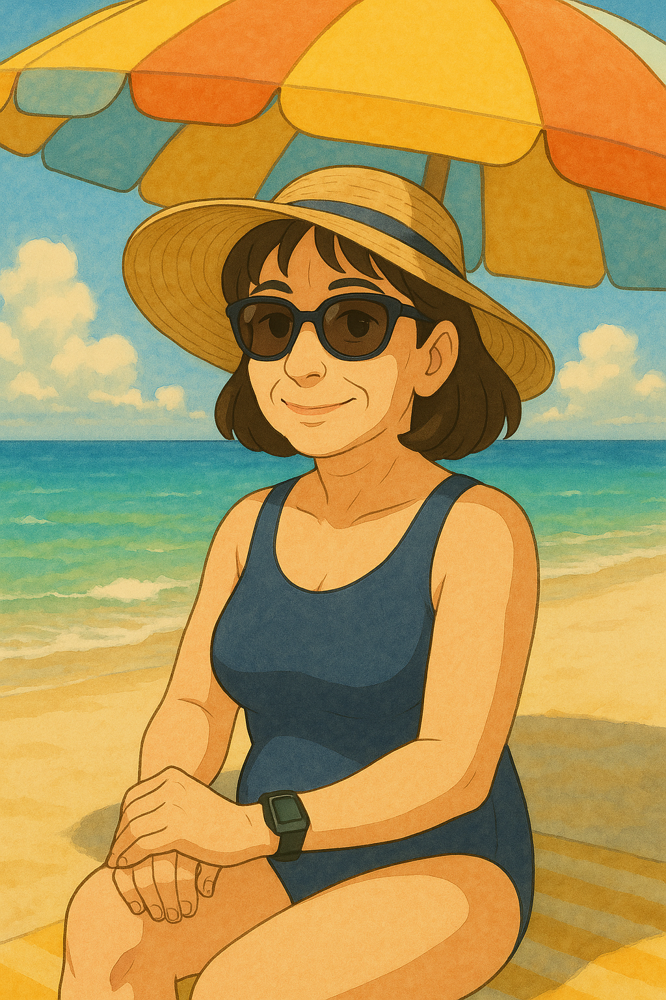
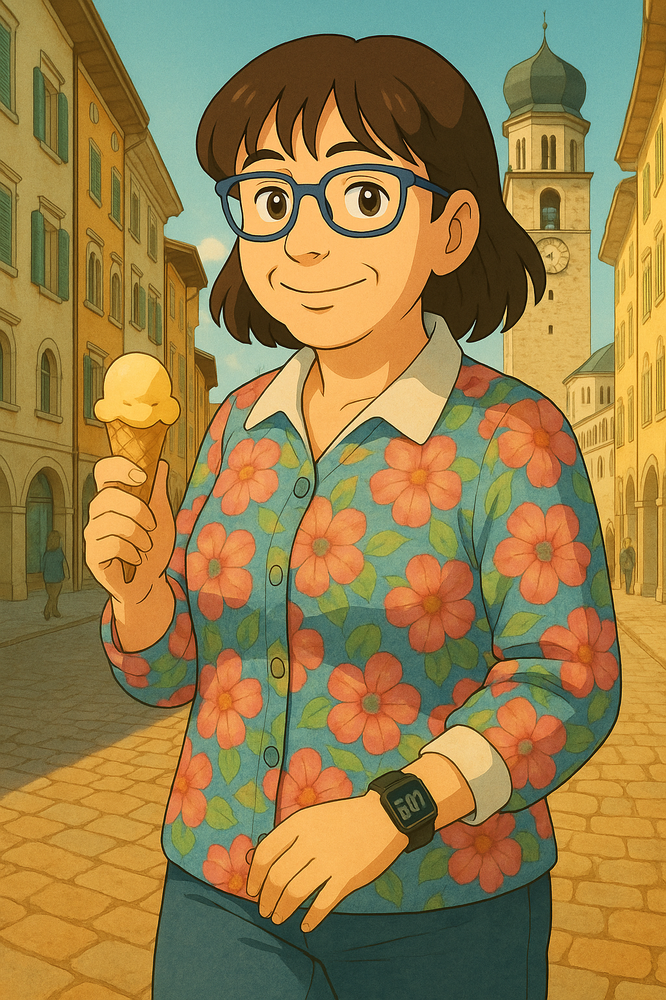
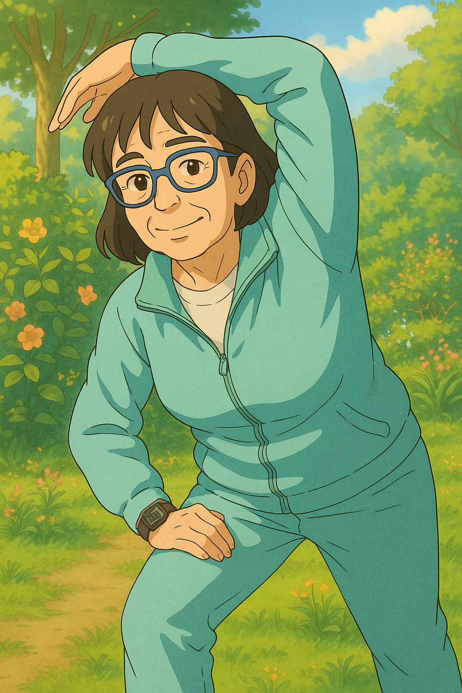
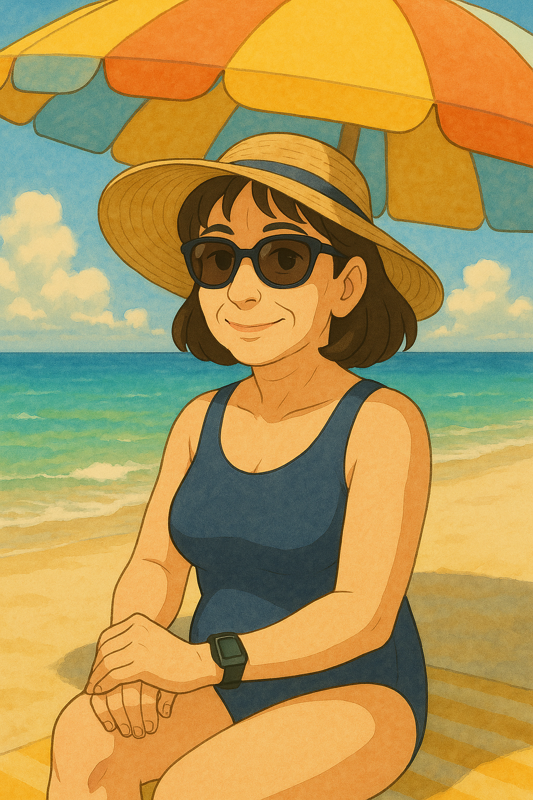
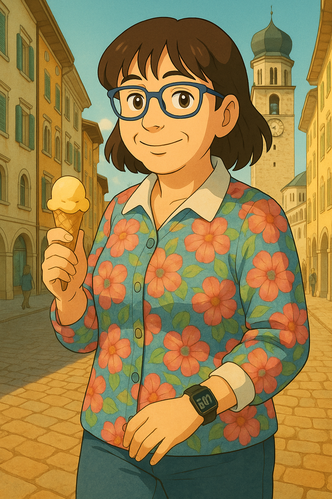
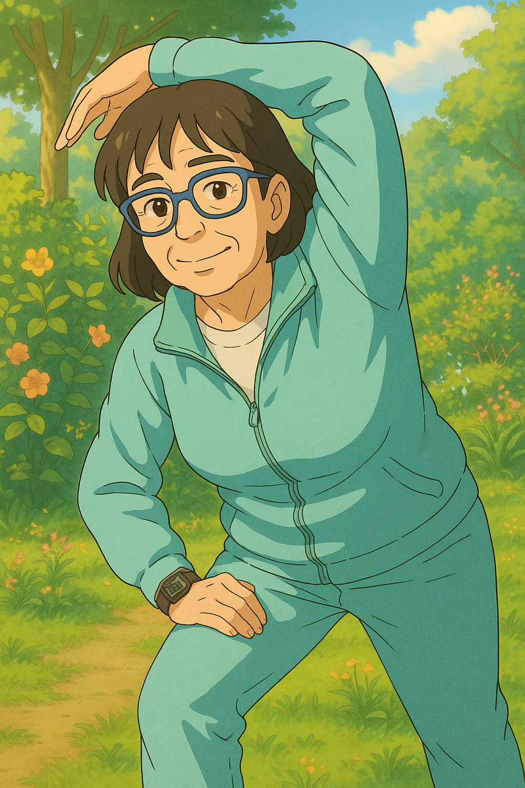

Lucia
 





Descrizione
Regina gentile del Due Mori e compagna storica di Don Fabio, Lucia è l’incarnazione della dolcezza armata. Dietro il suo sorriso tenero si nasconde una forza invincibile e una resistenza emotiva da carro armato corazzato. È quella che ti dà una carezza, un consiglio, un regalo… e pure una sgridata con tono soave se serve.
Altezza
Circa 1.65 m
Mansione
Cameriera d’onore, dispensatrice ufficiale di amore, coccole e saggezza
Velocità
Tartaruga zen – si muove con calma e grazia, ma con l’eleganza di una leggenda vivente
Colore preferito
Da definire
Piatto preferito
Tutto
Fetish
Fare regalini ai figli (qualsiasi occasione è buona per portare qualcosa a qualcuno)
Debolezza
NESSUNA. È un carro armato sorridente. Un Panzer di bontà.
Pazienza
Eterna – potrebbe ascoltare il rumore dell’universo senza perdere la calma
Paese preferito
Italia
⟵ Torna alla Home